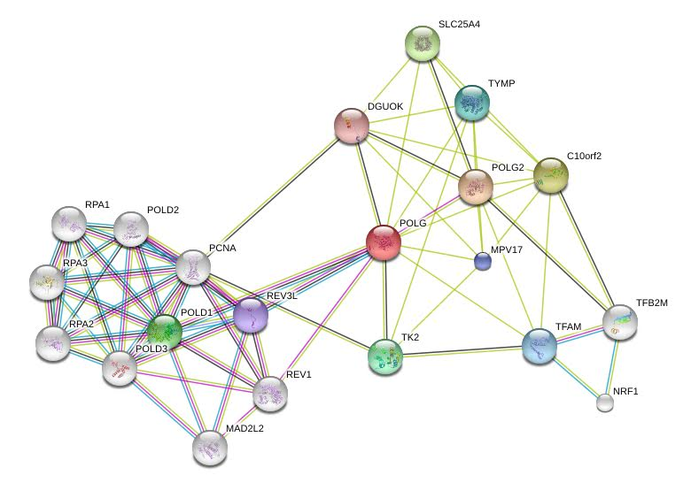

This page is conceptual, and data may not be accurate.
POLG
- Gene Symbol
- POLG
- ID
- HGNC:9179
- Protein Name
- polymerase (DNA directed), gamma HGNC
- Feature Type
- ORF
- Description
- Human mitochondrial DNA polymerase gamma catalytic subunit; forms heterotrimeric complex with 2 accessory subunit; human ortholog POLG complements yeast mip1 mutant; mutations in human POLG associated with Alpers-Huttenlocher syndrome (AHS), progressive external ophthalmoplegia (PEO), parkinsonism, other mitochondrial diseases 1 2 3 4 5 6 7 8
- Name Description
- Polymerase Gamma
Orthologs
External Links: Ensembl | OrthoDB | PhylomeDB | InParanoid
Disease
Showing 5 diseases
-
PROGRESSIVE EXTERNAL OPHTHALMOPLEGIA WITH MITOCHONDRIAL DNA DELETIONS, AUTOSOMAL RECESSIVE; PEOB
- Manifestations
- adult-onset of weakness of the external eye muscles and exercise intolerance; may include cataracts, hearing loss, sensory axonal neuropathy, ataxia, depression, hypogonadism, and parkinsonism.
- Identifier
- 258450
-
SENSORY ATAXIC NEUROPATHY, DYSARTHRIA, AND OPHTHALMOPARESIS; SANDO
- Manifestations
- mitochondrial depletion in skeletal muscle and peripheral nerve tissue; clinical triad of symptoms consists of sensory ataxic neuropathy, dysarthria, and ophthalmoparesis; may also include myopathy, seizures, and hearing loss
- Identifier
- 607459
-
PROGRESSIVE EXTERNAL OPHTHALMOPLEGIA WITH MITOCHONDRIAL DNA DELETIONS, AUTOSOMAL RECESSIVE; PEOB
- Manifestations
- adult-onset of weakness of the external eye muscles and exercise intolerance; may include cataracts, hearing loss, sensory axonal neuropathy, ataxia, depression, hypogonadism, and parkinsonism.
- Identifier
- 613662
-
PROGRESSIVE EXTERNAL OPHTHALMOPLEGIA WITH MITOCHONDRIAL DNA DELETIONS, AUTOSOMAL DOMINANT, 1; PEOA1
- Manifestations
- progressive weakness of ocular muscles and levator muscle of the upper eyelid. In a minority of cases, it is associated with skeletal myopathy, which predominantly involves axial or proximal muscles and which causes abnormal fatigability and even permanent muscle weakness.
- Identifier
- 157640
-
MITOCHONDRIAL DNA DEPLETION SYNDROME 4A (ALPERS TYPE); MTDPS4A
- Manifestations
- autosomal recessive hepatocerebral syndrome due to mitochondrial dysfunction; severe developmental delay, intractable seizures, liver failure, childhood death.
- Identifier
- 203700
External Links: DOID | OMIM
Sequence


External Links: Entrez Gene | Ensembl | UCSC | RefSeq
Protein
- Preferred Names
- DNA polymerase subunit gamma-1
- Other Names
- PolG-alpha, mitochondrial DNA polymerase catalytic subunit
Sequence
MSRLLWRKVAGATVGPGPVPAPGRWVSSSVPASDPSDGQRRRQQQQQQQQQQQQQPQQPQVLSSEGGQLRHNPLDIQMLSRGLHEQIFGQGGEMPGEAAVRRSVEHLQKHGLWGQPAVPLPDVELRLPPLYGDNLDQHFRLLAQKQSLPYLEAANLLLQAQLPPKPPAWAWAEGWTRYGPEGEAVPVAIPEERALVFDVEVCLAEGTCPTLAVAISPSAWYSWCSQRLVEERYSWTSQLSPADLIPLEVPTGASSPTQRDWQEQLVVGHNVSFDRAHIREQYLIQGSRMRFLDTMSMHMAISGLSSFQRSLWIAAKQGKHKVQPPTKQGQKSQRKARRGPAISSWDWLDISSVNSLAEVHRLYVGGPPLEKEPRELFVKGTMKDIRENFQDLMQYCAQDVWATHEVFQQQLPLFLERCPHPVTLAGMLEMGVSYLPVNQNWERYLAEAQGTYEELQREMKKSLMDLANDACQLLSGERYKEDPWLWDLEWDLQEFKQKKAKKVKKEPATASKLPIEGAGAPGDPMDQEDLGPCSEEEEFQQDVMARACLQKLKGTTELLPKRPQHLPGHPGWYRKLCPRLDDPAWTPGPSLLSLQMRVTPKLMALTWDGFPLHYSERHGWGYLVPGRRDNLAKLPTGTTLESAGVVCPYRAIESLYRKHCLEQGKQQLMPQEAGLAEEFLLTDNSAIWQTVEELDYLEVEAEAKMENLRAAVPGQPLALTARGGPKDTQPSYHHGNGPYNDVDIPGCWFFKLPHKDGNSCNVGSPFAKDFLPKMEDGTLQAGPGGASGPRALEINKMISFWRNAHKRISSQMVVWLPRSALPRAVIRHPDYDEEGLYGAILPQVVTAGTITRRAVEPTWLTASNARPDRVGSELKAMVQAPPGYTLVGADVDSQELWIAAVLGDAHFAGMHGCTAFGWMTLQGRKSRGTDLHSKTATTVGISREHAKIFNYGRIYGAGQPFAERLLMQFNHRLTQQEAAEKAQQMYAATKGLRWYRLSDEGEWLVRELNLPVDRTEGGWISLQDLRKVQRETARKSQWKKWEVVAERAWKGGTESEMFNKLESIATSDIPRTPVLGCCISRALEPSAVQEEFMTSRVNWVVQSSAVDYLHLMLVAMKWLFEEFAIDGRFCISIHDEVRYLVREEDRYRAALALQITNLLTRCMFAYKLGLNDLPQSVAFFSAVDIDRCLRKEVTMDCKTPSNPTGMERRYGIPQGEALDIYQIIELTKGSLEKRSQPGP
Domains

External Links: Gene3D | InterPro | PANTHER | Pfam | SMART | PROSITE | PRINTS
Function

External Links: UniProtKB | Ensembl | QuickGO | AmiGO
Interactions


External Links: STRING | BioGRID | SGD
Literature
-
Qian Y, et al. (2014) Yeast Cells Expressing the Human Mitochondrial DNA Polymerase Reveal Correlations between Polymerase Fidelity and Human Disease Progression. J Biol Chem 289(9):5970-85 PMID: 24398692
-
Baruffini E, et al. (2011) Predicting the contribution of novel POLG mutations to human disease through analysis in yeast model. Mitochondrion 11(1):182-90 PMID: 20883824
-
Stewart JD, et al.(2010) Polymerase ? gene POLG determines the risk of sodium valproate-induced liver toxicity. Hepatology 52(5):1791-6 PMID: 21038416
-
Dimitrov LN, et al.(2009) Polymorphisms in multiple genes contribute to the spontaneous mitochondrial genome instability of Saccharomyces cerevisiae S288C strains. Genetics 183(1):365-83 PMID: 19581448
-
Stuart GR, et al. (2006) Mitochondrial and nuclear DNA defects in Saccharomyces cerevisiae with mutations in DNA polymerase gamma associated with progressive external ophthalmoplegia. Hum Mol Genet 15(2):363-74 PMID: 16368709
-
Young MJ, et al. (2006) The carboxyl-terminal extension on fungal mitochondrial DNA polymerases: identification of a critical region of the enzyme from Saccharomyces cerevisiae. Yeast 23(2):101-16 PMID: 16491467
-
Lucas P, et al. (2004) Absence of accessory subunit in the DNA polymerase gamma purified from yeast mitochondria. Mitochondrion 4(1):13-20 PMID: 16120369
-
Foury F (1989) Cloning and sequencing of the nuclear gene MIP1 encoding the catalytic subunit of the yeast mitochondrial DNA polymerase. J Biol Chem 264(34):20552-60 PMID: 2684980
External Links: PubMed | SGD